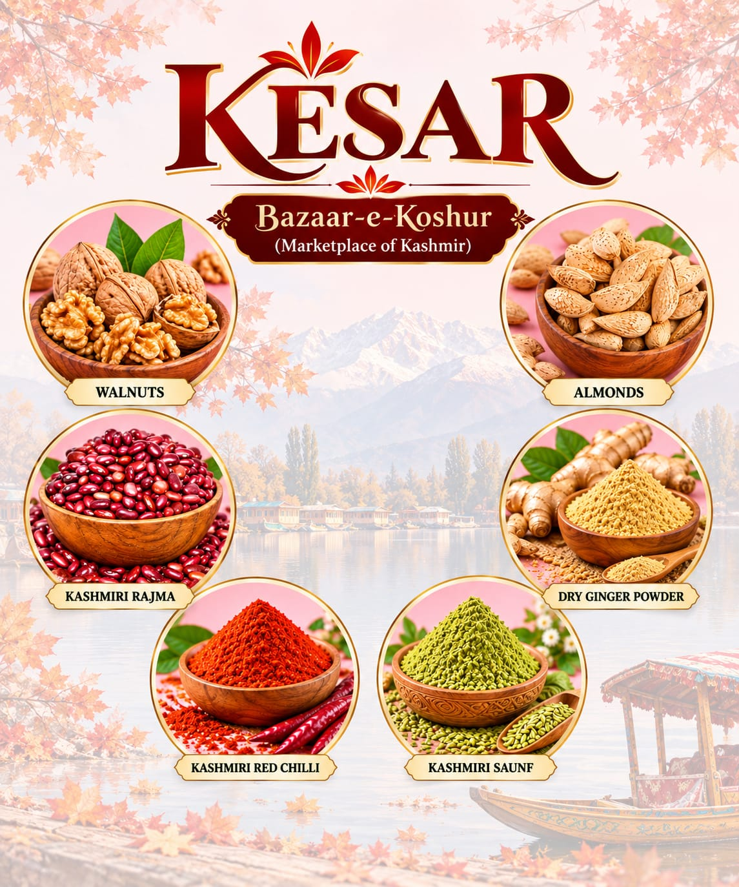

Our Story & Inheritance
Our connection with Kashmir is not a business idea. It is our inheritance.
My father, Durganath Tikoo, grew up in Shalakadal, Habbakadal, Srinagar, in the family home built by my grandfather in the early 19th century. Like many Kashmiri Pandit families, our family had a long tradition of serving in Government.
My mother, Late Asha Pandita Tikoo, grew up in Zolur village, Sopore, the daughter of a farmer. She brought with her something truly special—a natural, almost God-gifted understanding of food, spices, fruits and dry fruits.

Because of my father's postings, our family moved across different parts of India, eventually making Lucknow our home. Yet, wherever we lived, Kashmir travelled with us.
While the world around us embraced new cuisines and changing tastes, our home remained anchored in the traditions we had inherited. The food, the aromas, the recipes and the rituals of Kashmir remained unchanged.
And at the heart of it all was my mother's kitchen—where generations-old Kashmiri flavours came alive through her extraordinary culinary skills. Her food and lavish Kashmiri spreads became a cherished part of our family identity.
“Because some legacies are not meant to be forgotten. They are meant to be carried forward.”